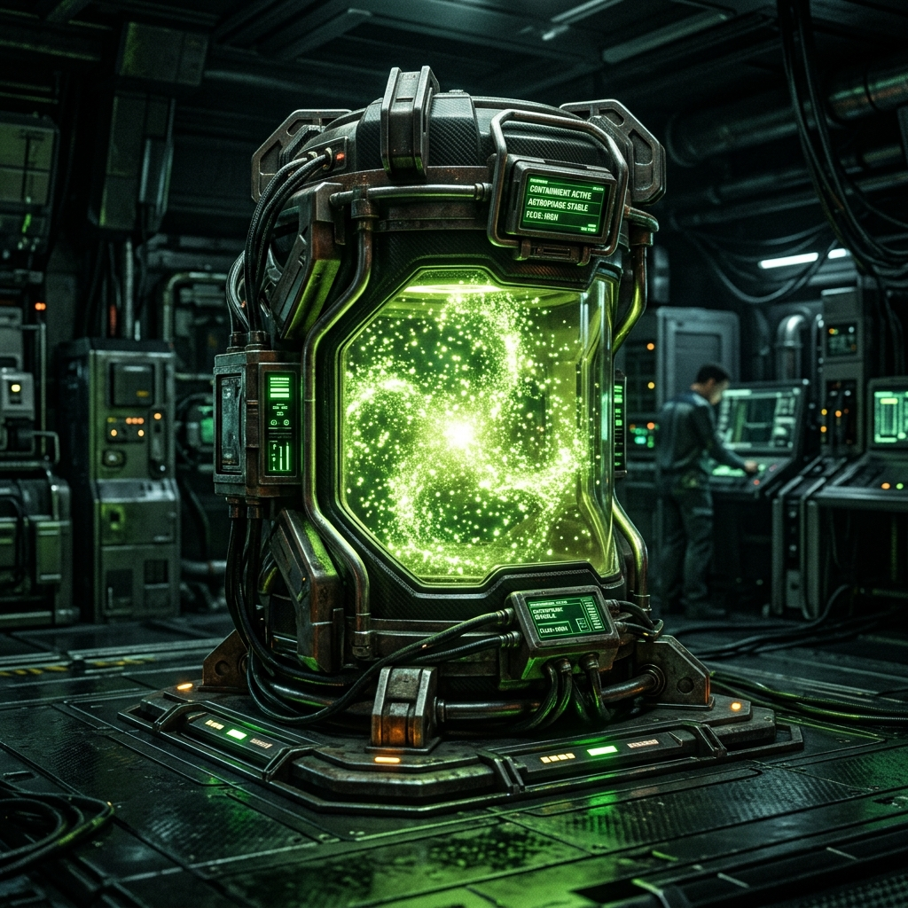

A compact sci-fi reasoning assistant — trained to think calmly under uncertainty, inspired by the journey of Dr. Ryland Grace.
An end-to-end ML pipeline from hand-crafted data to deployed model — built for calm, scientific reasoning in the face of the unknown
30+ hand-crafted and synthetic instruction examples covering science communication, uncertainty awareness, and teamwork under extreme constraints.
19.8 KB combinedQLoRA fine-tuned on Qwen2.5-3B-Instruct using Unsloth — teaching the model to reason with uncertainty and respond with measured confidence.
Rank 16 · Alpha 16
Full-weight deployment-ready model merged from base + adapter. Published to Hugging Face for direct inference — no adapter loading required.
3B params · FP16I am going to figure this out. That's what scientists do. They figure things out.
The complete training lifecycle — data curation, synthetic expansion, fine-tuning, and deployment to production
30 hand-written original instruction examples
9.4 KBTeacher model generates reviewed candidates (Qwen 7B Instruct)
+10.1 KBtrain_v1_combined.jsonl + eval_prompts.jsonl
19.8 KB totalQLoRA with Unsloth on Qwen2.5-3B · Rank 16 · 2 epochs
Colab T4 GPUFull-weight merged · FP16 · Ready for HF deployment
3B paramsFrom base model to specialized reasoning assistant — the complete technical architecture
Qwen/Qwen2.5-3B-Instruct
3B Parameters · Pre-trained · General Purpose Instruct Model
Rank 16 · Alpha 16 · Dropout 0.0
hail-mary-inspired-student-merged
Full FP16 Weights · Deployment Ready
Complete LoRA fine-tuning workflow: load base model → inject adapters → format dataset → train → save adapter weights to Google Drive
▶ Training NotebookMerge and deploy workflow: load base + adapter → merge weights → save FP16 → push merged model to HuggingFace Hub
▶ Merge NotebookComplete codebase layout and the automation scripts that power every stage of the mission
Everything published and deployed across GitHub and Hugging Face — the mission's public-facing deliverables
⚠️ This project is educational and portfolio-oriented. Inspired by themes from Project Hail Mary, not licensed source text. Do not use outputs as authority in high-stakes contexts.